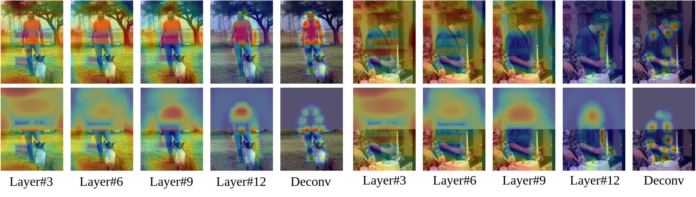
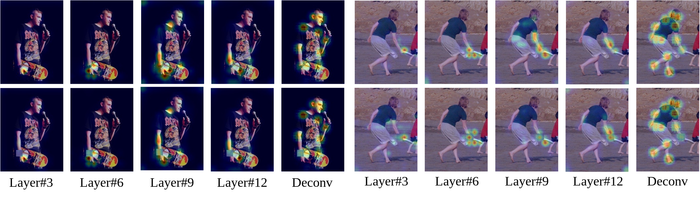

Results on Real-world Videos


1. Plain vision transformers for pose estimation tasks with better performance-speed trade-off.
2. ViTPose+ obtains SOTA performance on MS COCO, AI Challenger, MPII, OCHuman, COCO-WholeBody, AP-10K, and APT-36K datasets without introducing extra parameters and computations during inference.
3. Different properties of plain vision transformer on pose estimation tasks are demonstrated, including simplicity, scalability, flexibility, and transferability.


1. We visualize the features from the 3rd, 6th, 9th, and 12th layer of the ViTPose-B backbone and the features from the deconvolution layers with half of the images visible:
2. We visualize the attention maps of the 3rd, 6th, 9th, and 12th layer of the ViTPose-B backbone and the features from the deconvolution layers with the right wrist of the target masked:
@inproceedings{xu2022vitpose,
title={ViTPose: Simple Vision Transformer Baselines for Human Pose Estimation},
author={Xu, Yufei and Zhang, Jing and Zhang, Qiming and Tao, Dacheng},
booktitle={Advances in Neural Information Processing Systems},
year={2022}
}@inproceedings{xu2022vitpose,
title={ViTPose: Simple Vision Transformer Baselines for Human Pose Estimation},
author={Xu, Yufei and Zhang, Jing and Zhang, Qiming and Tao, Dacheng},
booktitle={Advances in Neural Information Processing Systems},
year={2022}
}